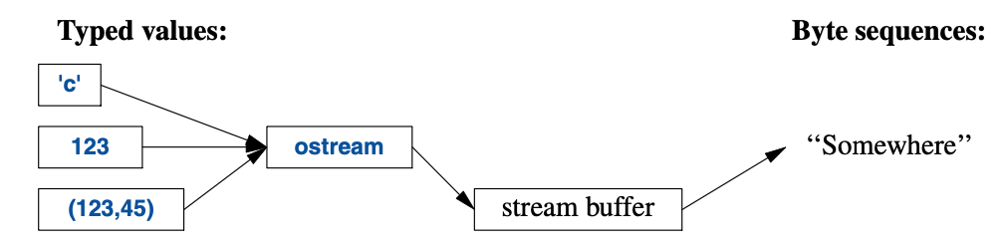
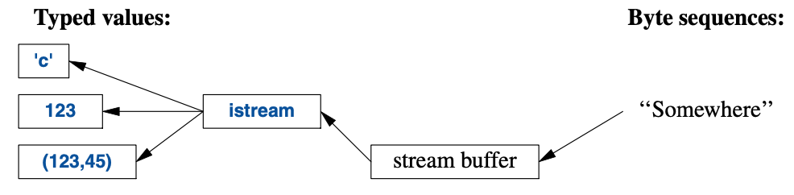

10
输入和输出
不见即不得。
—— Brian W. Kernighan1
10.1 导言
I/O流程序库为文本和数字值提供带缓冲输入输出，无论这些值是格式化还是未格式化的。
ostream将带有类型的对象转化成字符（字节）流：

istream将字符（字节）流转化成带有类型的对象：

这些有关istream和ostrean的操作在 §10.2 和 §10.3 叙述。
这些操作是类型安全、大小写敏感的，并且可扩展以便处理用户定义的那些类型（§10.5）。
其它形式的用户交互，例如图形I/O，可利用程序库处理，但它们并非ISO标准的组成部分， 因此在这里不加赘述。
这些流可用于二进制的 I/O，用于多种字符类型，可进行本地化，还可以采用高级缓冲策略， 但这些主题不在本书的讨论范畴之内。
这些流可用于输入进或输出自string（§10.3），可格式化进string缓冲（§10.8），
还可以处理文件 I/O（§10.10）。
I/O 流相关的类全都具有析构函数， 这些函数会释放所拥有的全部资源（比如缓冲以及文件执柄）。 也就是说，它们是“资源请求即初始化”（RAII；§5.3）的示例。
10.2 输出
I/O流库在<ostream>中为所有内建类型定义了输出。
此外，为用户定义类型定义输出也不难（§10.5）。
操作符<<（“输出到”）是指向ostream类型对象的输出操作符。
默认情况下，写到cout的那些值会被转化成一个字符流。
例如，要输出十进制数字10，可以这样写：
void f()
{
cout << 10;
}
这将把字符1后跟着个字符0放置到标准输出流中。
还可以写成这样的等价形式：
void g()
{
int x{10};
cout << x;
}
不同的类型在输出时可以清晰直观的方式组合：
void h(int i)
{
cout << "the value of i is ";
cout << i;
cout << '\n';
}
对于h(10)，将会输出：
the value of i is 10
输出多个相关内容的时候，人们很快就会不耐烦去反复敲打输出流的名字。 好在，输出表达式的结果可用于后续输出，例如：
void h2(int i)
{
cout << "the value of i is " << i << '\n';
}
h2()的输出跟h()一样。
字符常量是由单引号包围的字符。请注意，字符会作为字符输出而非一个数值。例如：
void k()
{
int b = 'b'; // 注意：char 被隐式转换为 int
char c = 'c';
cout << 'a' << b << c;
}
'b'的整数值是98（在C++实现所采用的ASCII编码中），因此输出是a98c。
10.3 输入
标准库在<istream>中提供了istream用于输入。
与ostream相似，istream也处理以字符串形式表现的内建类型，
也不难处理用户定义类型。
操作符>>（提取自）被用作输入操作符；cin是标准输入流。
>>的右操作数类型决定了可接受的输入内容和输入对象。例如：
void f()
{
int i;
cin >> i; // 把一个整数读入 i
double d;
cin >> d; // 把一个双精度浮点数读入 d
}
以上操作从标准输入读取一个数字，例如1234，进入变量i，
以及一个浮点数，例如12.34e5，进入双精度浮点数变量d。
与输出操作相似，输入操作也可以链式进行，因此可以写作等价的：
void f()
{
int i;
double d;
cin >> i >> d; // 读入 i 和 d
}
在以上两例中，整数的读取会被任何非数字字符终止。
默认情况下，>>会忽略起始的空白字符，因此一个合适的完整输入可以是：
1234
12.34e5
通常，我们需要读取一个字符序列。一个便捷的方式是将其读进一个string。例如：
void hello()
{
cout << "Please enter your name\n";
string str;
cin >> str;
cout << "Hello, " << str << "!\n";
}
如果你输入Eric，输出将是：
Hello, Eric!
默认情况下，任意空白字符，例如空格或换行，都会终止输入，
因此，如果你假装自己是命运多舛约克之王而输入Eric Bloodaxe，输出仍会是：
Hello, Eric!
你可以用getline()函数读取一整行。例如：
void hello_line()
{
cout << "Please enter your name\n";
string str;
getline(cin,str);
cout << "Hello, " << str << "!\n";
}
借助这段程序，输入的Eric Bloodaxe就能得到预期的输出：
Hello, Eric Bloodaxe!
行尾的换行符被丢弃了，因此cin就已经准备好接收下一行输入了。
使用格式化的 I/O 操作通常不易出错，高效，也比一个个字符的操作代码量少。
特别是，istream还会负责内存管理和越界检查。
可以用stringstream针对内存中的内容进行格式化输入和输出（§10.8）。
标准字符串具有良好的可扩展性，能够保存你放入其中的内容；你无需预计算最大长度。 因此，如果你输入几兆字节的分号，程序就会显示很多页的分号给你。
10.4 I/O状态
一个iostream具有一个状态，可以查询它，以确定某个操作是否成功。
最常见的操作是读取一连串的值：
vector<int> read_ints(istream& is)
{
vector<int> res;
for (int i; is>>i; )
res.push_back(i);
return res;
}
这段代码从is中读取，直到遇到非数字的内容。该内容通常会成为输入的结束。
此处的情形是is>>i操作返回is的引用，
并检测iostream是否产生了true，并为下一个操作做好准备。
通常，I/O状态持有待读取和写入全部信息，例如格式化信息（§10.6），
错误状态（例如，到达 输入的结尾(end-of-input)了吗？），以及所使用缓冲的类型。
另外，用户可以设置这些状态，以表示某个错误的发生（§10.5）
还可以清除该状态，如果它不是严重问题。
例如，可以想象read_ints()的某个版本接收一个终止字符串：
vector<int> read_ints(istream& is, const string& terminator)
{
vector<int> res;
for (int i; is >> i; )
res.push_back(i);
if (is.eof()) // 很好：文件末尾
return res;
if (is.fail()) { // 没能读取一个 int；它是终止符吗？
is.clear(); // 重置状态为 good()
is.unget(); // 把这个非数字字符放回到流里
string s;
if (cin>>s && s==terminator)
return res;
cin.setstate(ios_base::failbit); // 把 fail() 添加到 cin 的状态
}
return res;
}
auto v = read_ints(cin,"stop");
10.5 用户定义类型的I/O
除了针对内建类型和string的 I/O，
iostream库还允许程序员为他们自己的类型定义I/O。
例如，考虑一个简单的类型Entry，可用它表示电话薄的一个条目：
struct Entry {
string name;
int number;
};
可以定义一个简单的输出操作符，使用 {"name",number} 格式将其打印出来， 该格式与代码中初始化它的时候类似：
ostream& operator<<(ostream& os, const Entry& e)
{
return os << "{\"" << e.name << "\", " << e.number << "}";
}
用户定义的输出操作符接收输出流（传引用）作为第一个参数，并返回这个流作为结果。
对应的输入操作符相对复杂一些，因为此操作需要检查格式的正确性，并处理错误：
istream& operator>>(istream& is, Entry& e)
// 读取 { "name" , number } 对。注意：使用 { " " 和 } 进行格式化
{
char c, c2;
if (is>>c && c=='{' && is>>c2 && c2=='"') { // 以 { " 开头
string name; // 字符串的默认值是空字符串： ""
while (is.get(c) && c!='"') // " 前的所有内容都是 name 部分
name+=c;
if (is>>c && c==',') {
int number = 0;
if (is>>number>>c && c=='}') { // 读取 number 和一个 }
e = {name,number}; // 赋值给这条记录
return is;
}
}
}
is.setstate(ios_base::failbit); // 在流中标记 失败
return is;
}
输入操作返回一个指向其istream的引用，可用于检测操作是否成功。
例如：作为条件使用时，is>>c表示“是否成功从is读取一个char置入了c？”
is>>c默认会跳过空白字符，但是is.get(c)不会，
因此这个Entry-输入 操作符忽略（跳过）name字符串外的空白字符，
但是不会忽略name中的。例如：
{ "John Marwood Cleese", 123456 }
{"Michael Edward Palin", 987654}
可以这样从输入读取这对值进入一个Entry：
for (Entry ee; cin>>ee; ) // 从 cin 读入 ee
cout << ee << '\n'; // 把 ee 写出到 cout
输出是：
{"John Marwood Cleese", 123456}
{"Michael Edward Palin", 987654}
有关在字符流中识别模式的更系统化的技术（正则表达式匹配），请参阅 §9.4。
10.6 格式化
iostream库提为控制输入和输出格式化供了大量的控制操作。
最简单的格式化控制叫做操控符（manipulator），
可见于<ios>、<istrean>、<ostream>和
<iomanip>（针对接收参数的操控符）。
例如，可以将整数作为（默认的）十进制、八进制或十六进制数字输出：
cout << 1234 << ',' << hex << 1234 << ',' << oct << 1234 << '\n'; // 打印1234,4d2,2322
可以显式为浮点数设置输出格式：
constexpr double d = 123.456;
cout << d << "; " // 为 d 使用默认格式
<< scientific << d << "; " // 为 d 使用 1.123e2 风格的格式
<< hexfloat << d << "; " // 为 d 使用十六进制表示法
<< fixed << d << "; " // 为 d 使用123.456 风格的格式
<< defaultfloat << d << '\n'; // 为 d 使用默认格式
这将输出：
123.456; 1.234560e+002; 0x1.edd2f2p+6; 123.456000; 123.456
浮点数的精度是个决定其显示位数的整数：
- 常规（general）格式（
defaultfloat）让编译器选择格式去呈现某个值， 以便该格式在可用空间内能最好地展示其值。此精度可指定最大位数。 - 科学计数法（scientific）格式以小数点前一位数字和一个幂呈现某个值。 此精度可指定小数点后数字的最大位数。
- 固定（fixed）格式以整数部分后跟一个小数点再跟小数部分呈现某个值， 此精度可指定小数点后数字的最大位数。
浮点数会被四舍五入而不是截断，precision()不会影响整数的输出。例如：
cout.precision(8);
cout << 1234.56789 << ' ' << 1234.56789 << ' ' << 123456 << '\n';
cout.precision(4);
cout << 1234.56789 << ' ' << 1234.56789 << ' ' << 123456 << '\n';
cout << 1234.56789 << '\n';
这将输出：
1234.5679 1234.5679 123456
1235 1235 123456
1235
这些浮点数操控符是“有粘性的（sticky）”； 就是说，它们的效果会对后续浮点数操作都生效。
10.7 文件流
在<fstream>中，标准库提供了针对文件的输入和输出：
ifstream用于从一个文件进行读取ofstream用于向一个文件进行写入fstream用于对一个文件进行读取和写入
例如：
ofstream ofs {"target"}; // “o” 的意思是 “输出（output）”
if (!ofs)
error("couldn't open 'target' for writing");
测试一个文件流是否正确打开，通常要检测其状态。
ifstream ifs {"source"}; // “i” 的意思是 “输入（input）”
if (!ifs)
error("couldn't open 'source' for reading");
假设这些测试都成功了，那么ofs可以像普通ostream（类似cout）那样使用，
ifs可以像普通istream（类似cin）那样使用。
文件定位，以及更详尽的文件打开控制都行得通，但这些不在本书的范畴里。 对于文件名和文件系统的操作，请参阅 §10.10。
10.8 字符串流
在<sstream>中，标准库提供了针对string的写入和读出的操作：
istringstream用于从一个string进行读取ostringstream用于向一个string进行写入stringstream用于对一个string进行读取和写入。
例如：
void test()
{
ostringstream oss;
oss << "{temperature," << scientific << 123.4567890 << "}";
cout << oss.str() << '\n';
}
ostringstream的结果可以通过str()进行读取。
ostringstream的用法通常是在把结果交给GUI之前进行格式化。
类似地，从GUI接收的字符串可置于istringstream中进行格式化读取（§10.3）。
stringstream即可用于读取也可用于输出。例如，可以定义一个操作，
对于任何可呈现为string的类型，将其转换为另一个可呈现为string的类型：
template<typename Target =string, typename Source =string>
Target to(Source arg) // 从 Source 转换到 Target
{
stringstream interpreter;
Target result;
if (!(interpreter << arg) // 把 arg 写入到流
|| !(interpreter >> result) // 从流里读取结果
|| !(interpreter >> std::ws).eof()) // 还有东西剩在流中吗？
throw runtime_error{"to<>() failed"};
return result;
}
只有在无法被推断出或者没有默认值的情况下，模板参数才需要显式指定，所以可以这样写：
auto x1 = to<string,double>(1.2); // 非常明确（并且多余）
auto x2 = to<string>(1.2); // Source 被推断为 double
auto x3 = to<>(1.2); // Target 使用了默认的 string； Source 被推断为 double
auto x4 = to(1.2); // <> 冗余了；
// Target 使用了默认的 string； Source 被推断为 double
如果所有函数模板参数都有默认值，<>可以省略。
我认为这是个有关借助语言特性和标准库构件达成通用性和易用性的好例子。
10.9 C-风格I/O
C++标准库也支持C标准库的I/O，包括printf()和scanf()。
以特定的安全视角来看，大量应用这个库是不安全的，因此我不推荐用它们。
特别是，它们在输入的安全和便利性方面荆棘密布。
它们还不支持用户定义类型。
如果你不使用C风格I/O并且对I/O的性能锱铢必较，就调用：
ios_base::sync_with_stdio(false); // 避免显著的开销
没有这个调用，iostream会为了兼容C风格I/O而被显著拖慢。
10.10 文件系统
多数系统都有一个文件系统（file system）的概念，
以文件（file）的形式对持久化的信息提供访问。
很不幸，文件系统的属性和操作它们的方式五花八门。
为应对这个问题，<filesystem>
中的文件系统库为多数文件系统的多数构件提供了统一的接口。
借助<filesystem>，我们能够可移植地：
- 表示文件系统路径并在其中漫游
- 检查文件类型以及与之关联的权限
文件系统库可以处理 unicode，但其实现方式的解释则不在本书范畴内。 有关更详尽的信息，我推荐 cppreference[Cppreference] 和 Boost文件系统文档[Boost]。
考虑一个例子：
path f = "dir/hypothetical.cpp"; // 命名一个文件
assert(exists(f)); // f 必须存在
if (is_regular_file(f)) // f 是个普通文件吗？
cout << f << " is a file; its size is " << file_size(f) << '\n';
注意，操作文件系统的程序通常跟其它程序运行在同一台电脑上。
因此，文件系统的内容可能在两条命令之间发生变化。
例如，尽管我们事先精心地确保了f存在，但是在运行到下一行，
当我们询问f是否为普通文件的时候它可能就没了。
path是个相当复杂的类，足以处理本地字符集以及大量操作系统的习惯。
特别是，它能处理来自命令行的文件名，就像示例中main()展示的那样：
int main(int argc, char* argv[])
{
if (argc < 2) {
cerr << "arguments expected\n";
return 1;
}
path p {argv[1]}; // 从命令行参数创建一个 path
cout << p << " " << exists(p) << '\n'; // 注意：path可以像字符串那样打印出来
// ...
}
在使用之前，path不会检测有效性。
就算到使用的时候，其有效性也取决于该程序所运行系统的习惯。
显而易见，path可用来打开一个文件
void use(path p)
{
ofstream f {p};
if (!f) error("bad file name: ", p);
f << "Hello, file!";
}
除了path，<filesystem>还提供了用于遍历目录以及查询文件属性的类型：
| 文件系统中的类型（部分） | |
|---|---|
path |
目录路径 |
filesystem_error |
文件系统异常 |
directory_entry |
目录入口 |
directory_iterator |
用于遍历一个目录 |
recursive_directory_iterator |
用于遍历一个目录和其子目录 |
考虑一个简单但不失真实性的例子：
void print_directory(path p)
try
{
if (is_directory(p)) {
cout << p << ":\n";
for (const directory_entry& x : directory_iterator{p})
cout << " " << x.path() << '\n';
}
}
catch (const filesystem_error& ex) {
cerr << ex.what() << '\n';
}
字符串可以隐式地转换成path，因此可以这样运用print_directory：
void use() {
print_directory("."); // 当前目录
print_directory(".."); // 父目录
print_directory("/"); // Unix 根目录
print_directory("c:"); // Windows C 盘
for (string s; cin>>s; )
print_directory(s);
}
如果我也想列出子目录，应该用recursive_directory_iterator{p}。
如果我想以字典序列出条目，就该把这些path复制到一个vector中并排序后输出。
path类提供很多常见且有用的操作：
路径操作（部分）p和p2都是path
|
|
|---|---|
value_type |
本地系统用于文件系统编码的字符类型： POSIX上是 char，Windows上是wchar_t
|
string_type |
std::basic_string<value_type> |
const_iterator |
value_type为path的const BidirectionalIterator |
iterator |
const_iterator的别名 |
p=p2 |
把p2赋值给p |
p/=p2 |
把p和p2用文件名分隔符(默认是/)连接 |
p+p2 |
把p和p2连接（无分隔符） |
p.native() |
p的本地系统格式 |
p.string() |
p以其所在的本地系统格式表示的string |
p.generic_string() |
p以通用格式表示的string |
p.filename() |
p的文件名部分 |
p.stem() |
p的主干部分（不带扩展名的文件名——译注） |
p.extension() |
p的文件扩展名部分 |
p.begin() |
p的元素序列的起始 |
p.end() |
p的元素序列的终止 |
p==p2，p!=p2 |
p和p2的相等、不等性判定 |
p<p2，p<=p2，p>p2，p>=p2 |
字典序比对 |
is>>p，os<<p |
进入/取出p的流I/O操作 |
u8path(s) |
以UTF-8编码的源字符串s构造一个路径 |
例如：
void test(path p)
{
if (is_directory(p)) {
cout << p << ":\n";
for (const directory_entry& x : directory_iterator(p)) {
const path& f = x; // 指向一个目录条目的路径部分
if (f.extension() == ".exe")
cout << f.stem() << " is a Windows executable\n";
else {
string n = f.extension().string();
if (n == ".cpp" || n == ".C" || n == ".cxx")
cout << f.stem() << " is a C++ source file\n";
}
}
}
}
我们把path当作一个字符串（即：f.extension）使用，
还可以从path中提取各种类型的字符串（即：f.extension().string()）。
请当心，命名习惯、自然语言以及字符串编码的复杂度非常高。 文件系统库的抽象提供了可移植性与极大的简化。
文件系统操作（部分）p，p1和p2都是path；
e是个error_code；
b是个标志成功或失败的布尔值
|
|
|---|---|
exists(p) |
p指向的文件系统对象是否存在？
|
copy(p1,p2) |
把p1的文件或目录复制到p2；将错误以异常形式报告 |
copy(p1,p2,e) |
复制的文件或目录；将错误以错误码形式报告 |
b=copy_file(p1,p2) |
把p1的文件内容复制到p2；将错误以异常形式报告 |
b=create_directory(p) |
创建名为p的新目录；通向p的中间目录必须存在 |
b=create_directories(p) |
创建名为p的新目录；通向p的中间目录一并创建 |
p=current_path() |
p是当前工作目录 |
current_path(p) |
让p成为当前工作目录 |
s=file_size(p) |
s是p的字节数 |
b=remove(p) |
如果p是个文件或空目录，移除它 |
许多操作都有接收额外参数的重载，例如操作系统权限。 这类操作大大超出了本书的范畴，所以在需要用它的时候去搜索吧。
像copy()一样，所有的操作都有两个版本：
- 像表中列出那样的基础版本，即
exists(p)。 如果操作失败，函数将抛出filesystem_error。 - 带有额外
error_code参数的版本，即exists(p,e)。检测e查看操作是否成功。
如果在常规使用中预期会频繁失败，请使用错误码， 如果出错是异常状况，就请使用抛出异常的操作。
通常，使用查询函数是检查文件属性最简单、最直接的方式。
<filesystem>库略知几个常见的文件类型，并将其余的归类为“其它”：
文件类型f是个path或者file_status
|
|
|---|---|
is_block_file(f) |
f是个块设备吗？ |
is_character_file(f) |
f是个字符设备吗？ |
is_directory(f) |
f是个目录吗？ |
is_empty(f) |
f是个空的文件或目录吗？ |
is_fifo(f) |
f是个命名管道吗？ |
is_other(f) |
f是其他类型的文件吗？ |
is_regular_file(f) |
f是个常规（普通）文件吗？ |
is_socket(f) |
f是个命名的IPC socket 吗？ |
is_symlink(f) |
f是个符号链接吗？ |
status_known(f) |
f的文件状态已知吗？ |
10.11 忠告
- [1]
iostream是类型安全、大小写敏感并可扩展的；§10.1。 - [2] 只在不得不的时候再用字节级别的输入；§10.3； [CG: SL.io.1]。
- [3] 在读取的时候，永远该考虑格式有问题的输入；§10.3； [CG: SL.io.2]。
- [4] 避免使用
endl（如果你不知道什么是endl，你没漏读任何内容）；[CG: SL.io.50]。 - [5] 对于用户定义类型，如果其值是有意义文本形式，
请给它定义
<<和>>；§10.1；§10.2；§10.3。 - [6] 用
cout输出常规内容，cerr输出错误信息；§10.1。 - [7] 针对普通字符和宽字符，有不同的
iostream， 你还可以为任意字符类型定义iostream；§10.1。 - [8] 二进制 I/O 是受支持的；§10.1。
- [9] 对标准 I/O 流有标准的
iostream， 文件和string也都有对应的标准流；§10.2；§10.3；§10.7；§10.8。 - [10] 为简明的符号使用链式
<<；§10.2。 - [11] 为简明的符号使用链式
>>；§10.3。 - [12] 往
string里输入不会导致溢出；§10.3。 - [13] 默认情况下，
>>会跳过起始的空白字符；§10.3。 - [14] 对于可能恢复处理的I/O错误，使用流状态
fail去处理；§10.4。 - [15] 可以为你自定义的类型定义
<<和>>操作符；§10.5。 - [16] 不需要为新添加的
<<和>>修改istream和ostream；§10.5。 - [17] 使用操控符去控制格式化；§10.6。
- [18]
precision()规格会被应用到其后所有的浮点数输出操作；§10.6。 - [19] 浮点数格式化规格（即
scientific） 会被应用到其后所有的浮点数输出操作；§10.6。 - [20] 需要使用标准操控符时就
#include <ios>；§10.6。 - [21] 需要使用带参数的标准操控符时就
#include <iomanip>；§10.6。 - [22] 别尝试去复制文件流。
- [23] 在使用前，请记得检查文件流确定关联到了某个文件；§10.7。
- [24] 对内存中的格式化，请使用
stringstream；§10.8。 - [25] 可以在任何具有字符串表示的两个类型之间定义转换操作；§10.8。
- [26] C-风格的I/O操作不是类型安全的；§10.9。
- [27] 除非你需要 printf 相关的函数，否则应该调用
ios_base::sync_with_stdio(false)；§10.9； [CG: SL.io.10]。 - [28] 使用
<filesystem>而非特定操作系统的接口；§10.10。
1. 这句话的原文是“What you see is all you get.”，没找到出处，可见于他的维基百科页面 https://en.wikipedia.org/wiki/Brian_Kernighan ，未找到官方翻译，有一个译法是 所见即全部所得，但我理解这里强调的是“某些内容被抛弃”，故按此翻译。 —— 译者注 ↩